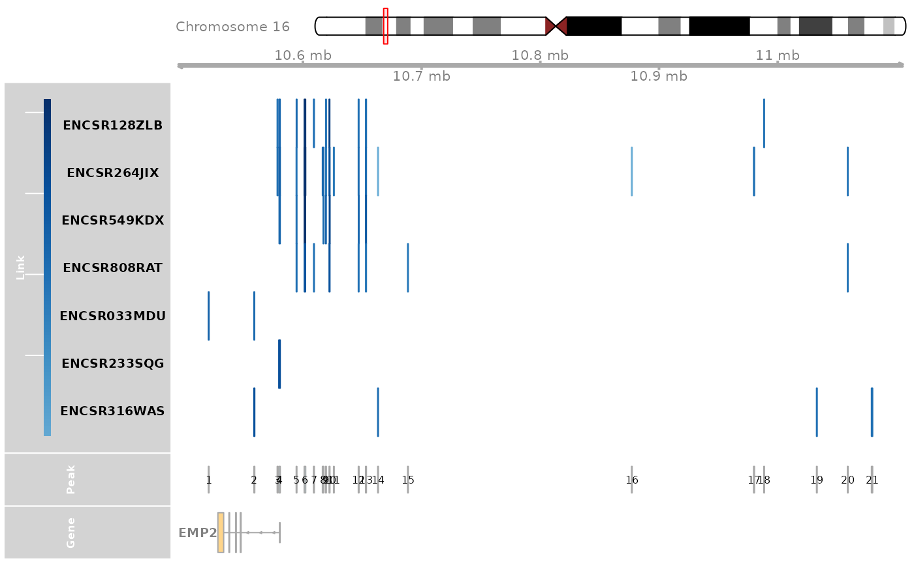
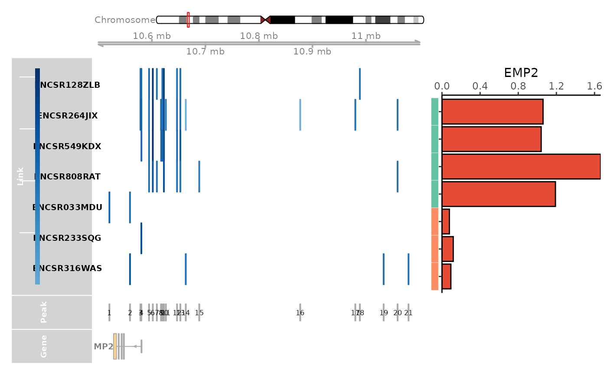

Integrating in-house data with CompassDB
integrat_inhouse_data.RmdHere, we use the differential regulation of EMP2 between lung and pancreas as an example. All we need from user is the sample / cell type average expression and CRE-gene linkage from Seurat object.
In order to get the average expression and linkage data frame from your Seurat object, you may find the code useful below.
# obj_list # A list of seurat objects as obj_list, with assay name as RNA and ATAC, with names as sample ids
# lexpr_list = lapply(obj_list, function(obj){
# AverageExpression(obj, group.by = "orig.ident")$RNA[, 1]
# }) # list for sample expression
# lexpr_df = do.call("cbind", lexpr_list)
# colnames(lexpr_df) = names(obj_list)
# llink_list = lapply(names(obj_list), function(i){
# obj = obj_list[[i]]
# DefaultAssay(obj) = "ATAC"
# link_df = as.data.frame(Links(obj))
# link_df$sample = i
# }) # list for sample linkage
# llink_df = do.call("rbind", llink_list)Load the in-house data, expression is a data frame with gene as rownames and sample as column names (by AverageExpression of Seurat), linkage is a data frame output from the Linkage of Signac package.
gene = "EMP2"
tissue = "Pancreas"
lexpr_df = read.csv("http://compass-db.com/static/test_data/lung_expr_df.csv", header = TRUE, row.names = 1)
llink_df = read.csv("http://compass-db.com/static/test_data/lung_linkage_bed.csv", header = TRUE, row.names = 1)Query the expression and linkage data from the CompassDB.
expr_vec = query_exprssion("hg38", gene)
link_res = query_linkage("hg38", gene)
link_df = link_res[["linkage"]]
sample_df = link_res[["samples"]]
sample_df = sample_df[sample_df$bio_source == tissue, ]
sample_df = sample_df[, c("sample_id", "bio_source")]
colnames(sample_df) = c("Sample", "Group")
sample_df = sample_df[order(sample_df$Group), ]
link_df = link_df[link_df$sample %in% sample_df$Sample, 1:(ncol(link_df)-5)]
expr_df = data.frame(t(expr_vec)[sample_df$Sample, ])
colnames(expr_df) = c("Gene")
expr_df$Sample = rownames(expr_df)Merge the in-house data with the CompassDB data.
colnames(llink_df) = colnames(link_df)
link_df = rbind(link_df, llink_df)
link_df = link_df[link_df$gene == gene, ]
sample_df = rbind(sample_df, data.frame(Sample = colnames(lexpr_df), Group = "Lung", row.names = colnames(lexpr_df)))
expr_df = rbind(expr_df, data.frame(Gene = unlist(lexpr_df[gene, ]), Sample = colnames(lexpr_df), row.names = colnames(lexpr_df)))Visualize the linkage and expression information from both in-house data and CompassDB.
### This can fail when ensemble server is down, if that is the case, please try it later
link_df$sample_id = link_df$sample
genome_track_map(link_df, sample_df, gene, expr_df, assembly = "hg38", legend.position="left", t = -20, b = 20)
#> the plot was flipped and the y limits will be applied to x-axis
#> Warning in get_plot_component(plot, "guide-box"): Multiple components found;
#> returning the first one. To return all, use `return_all = TRUE`.
Find the peaks that are highly correlated with the EMP2 expression in Lung tissue.
track_plot = plot_genome_track(link_df, gene, "hg38", sample_df$Sample)
peaks = track_plot[[length(track_plot)]]
peaks$name = as.character(peaks$name)
peak_order = make_peak_group(link_df, peaks, sample_df)
ht_peak_order = peak_order[peak_order[, "Lung"] >0.5 & peak_order[, "Pancreas"]<0.5, ]
print(dim(ht_peak_order))
#> [1] 7 2
ht_peaks = rownames(ht_peak_order)
### TFBS analysis
peak_vec = sub(":", "-", as.character(peaks))
ht_peaks = peak_vec[as.numeric(ht_peaks)]
tf = tf_binding("hg38", paste0(ht_peaks, collapse = "_"))
p = plot_giggle(tf)
p